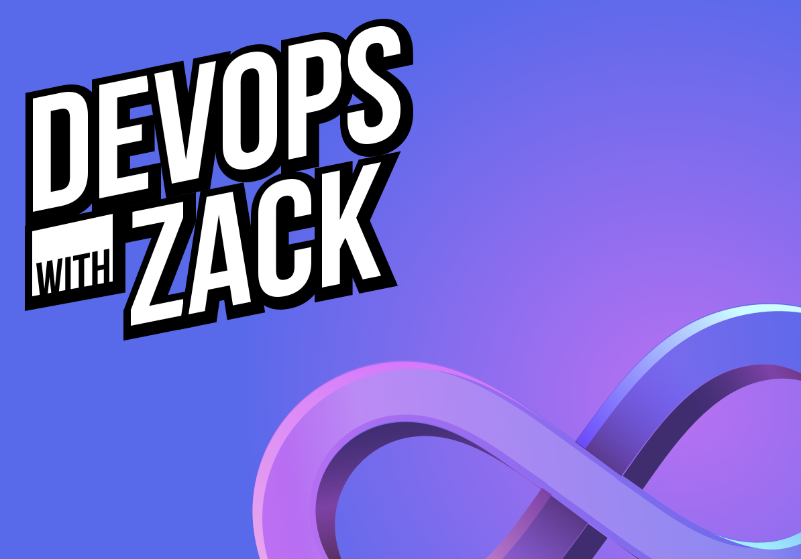
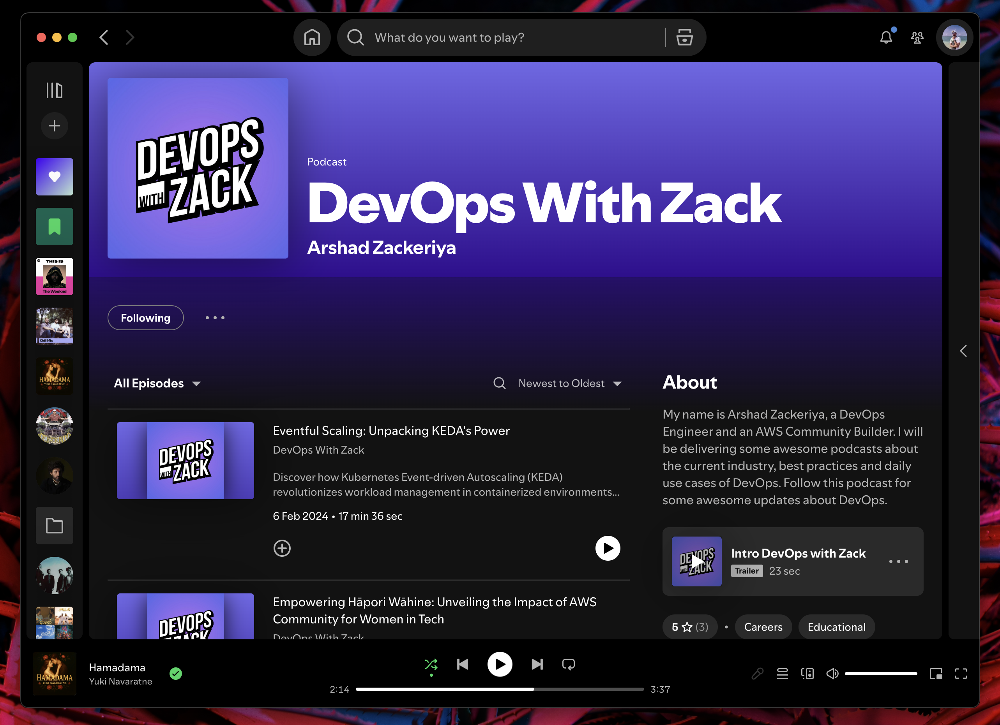

DevOps With Zack
Creator branding for DevOps, AWS, YouTube, and podcast content
DESCRIPTION
DevOps With Zack is a creator brand for DevOps and AWS content, built to work across video, podcast, and social profile surfaces.
CONTEXT
Zack's public ecosystem includes YouTube, Spotify podcast content, and a personal site for his platform engineering and AWS community work. The brand needed to be loud, easy to remember, and ready for creator thumbnails.



Brand Surfaces
A compact creator identity with enough punch for thumbnails, podcast listings, and social profile use.
YouTube
Bold cover art and a high-contrast wordmark for fast channel recognition.
Podcast
A visual style that can sit beside tech shows on Spotify without looking corporate.
Profile
A punchy avatar asset for repeated use across creator and community platforms.
YouTube cover: creator-first, high-energy, and instantly readable.

Spotify presence: the brand extended into podcast discovery surfaces.
DevOps With Zack branding for a DevOps/AWS creator, podcast, and video channel ecosystem.